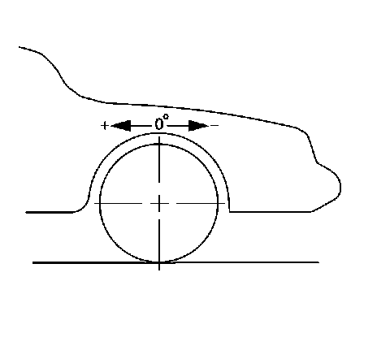

Caster Description
Caster Description
Caster Description:

Caster is the tilting of the uppermost point of the steering axis either forward or backward, when viewed from the side of the vehicle. A backward tilt is positive (+) and a forward tilt is negative (-). Caster influences directional control of the steering but does not affect the tire wear . Caster is affected by the vehicle height, therefore it is important to keep the body at its designed height. Overloading the vehicle or a weak or sagging rear spring will affect caster. When the rear of the vehicle is lower than its designated trim height, the front suspension moves to a more positive caster. If the rear of the vehicle is higher than its designated trim height, the front suspension moves to a less positive caster.
With too little positive caster, steering may be touchy at high speed and wheel returnability may be diminished when coming out of a turn. If one wheel has more positive caster than the other, that wheel will pull toward the center of the vehicle. This condition will cause the vehicle to pull or lead to the side with the least amount of positive caster.